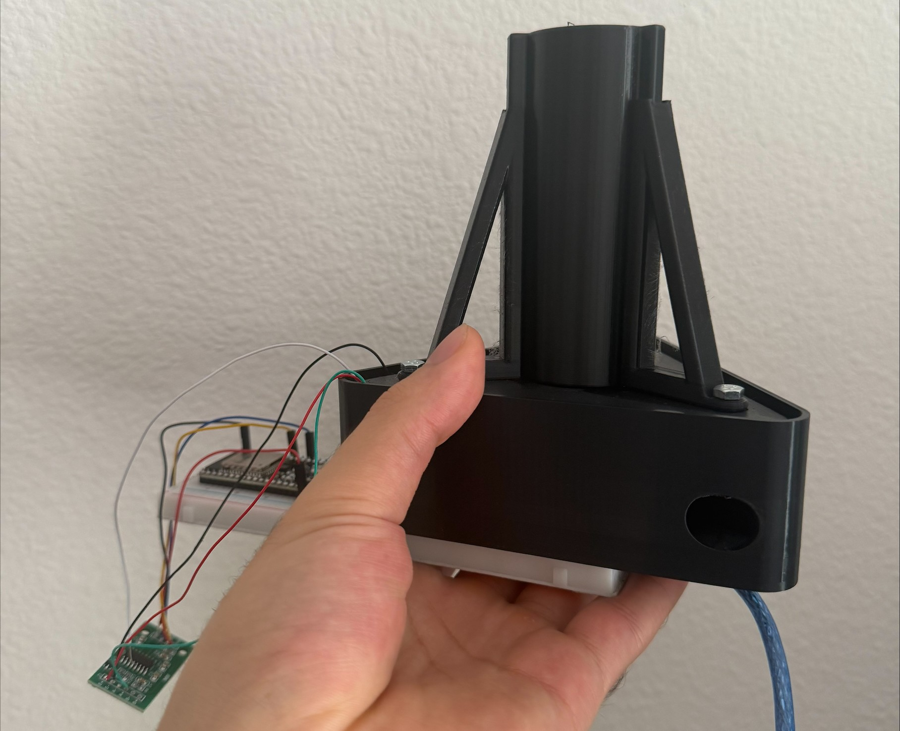

Javier A. Cuevas Chabrier
Mechanical Engineering & Computer Science Student @ the University of Central Florida
Projects & Organizations
Knights Experimental Rocketry - Propulsion Director
Led propulsion work applying rocketry fundamentals, managing Odysseus propulsion assemblies, supporting static-fire testing, designing payload-frame concepts, and pursuing certification.
Knights Racing BAJA SAE
Contributed to Baja SAE vehicle design by creating suspension hardware, tabs, spacers, and maintenance stand concepts backed by FEA material and strength checks.
Society of Hispanic Professional Engineers


Supported SHPE through payload-frame design, research opportunity programming, professional development events, outreach coordination, and volunteer leadership.
Solid Propellant Motor Project


Developed solid propellant motor tests by casting fuel blends, building thrust-measurement stands, reading sensor data with C++, and evaluating mixture performance.
In the above video, I ignited the propellant. This was an early test — new tests are underway with the updated scale shown above.
Digital Advertising AI
Built a Python Tkinter tool using Google's Gemma AI model to interpret market trends and ad performance for clearer campaign decisions.
Electric Generator
Built an electromagnetic induction generator with 3D printed parts while working toward integration with an electric bicycle application.
Robotic Arm
Designed a remote-controlled robotic arm around an Arduino Uno R3 while planning Raspberry Pi controller upgrades for expanded capability.
Physics Calculator
Created a multi-purpose calculator that demonstrates physics and calculus processes through clearer equations, inputs, and outputs.
Data Visualization
Built a Python executable that turns Excel spreadsheet data into quick scatter-plot visual summaries.
C Programs
Created console-based C programs including a quadratic calculator, dominoes simulator, and business manager to practice procedural programming and data handling.
Discord AI Bot
Developed a Discord AI chat bot to help monitor servers, assist students with time-consuming tasks, and solve engineering problems through code-aware responses.